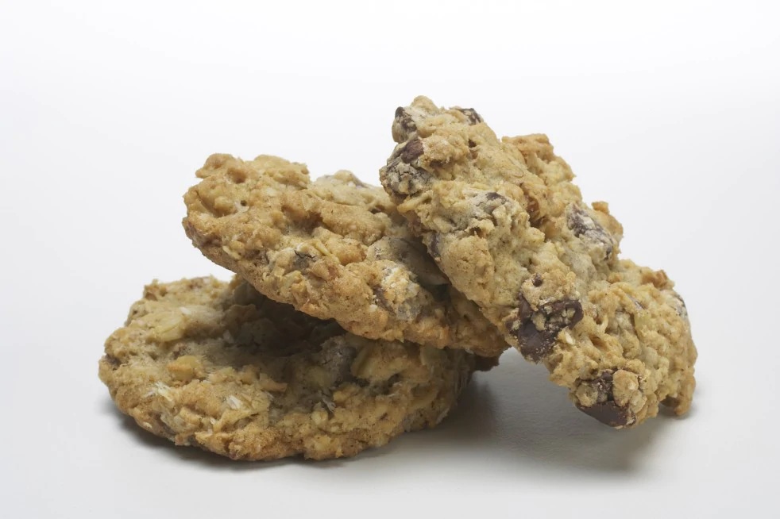

Laura Bush's Cowboy Cookies
Ingredients
- 3 cups flour
- 1 tablespoon baking powder
- 1 tablespoon baking soda
- 1 tablespoon ground cinnamon
- 1 teaspoon salt
- 3 sticks (12 ounces) butter, at room temperature
- 1 1/2 cups sugar
- 1 1/2 cups packed light brown sugar
- 3 large eggs
- 1 tablespoon vanilla extract
- 3 cups semisweet chocolate chips
- 3 cups old-fashioned rolled oats
- 2 cups sweetened flaked coconut
- 2 cups chopped pecans
Directions
- Position oven racks in the upper and lower thirds and preheat the oven to 350 degrees.
- Line 2 baking sheets with parchment paper.
- In a large bowl, combine the flour, baking powder, baking soda, cinnamon and salt.
- Using a stand mixer on medium speed, beat butter until smooth and creamy, about 1 min.
- Gradually add sugars and beat to combine, about 2 min.
- Add eggs, one at a time, beating after each one, and the vanilla extract.
- Reduce speed to low and add flour mixture gradually until just combined.
- Add the chocolate chips, oats, coconut and pecans, mixing until just combined.
For Large Cookies
- Drop a hefty 1/4 cup of dough onto the baking sheets for each cookie, spacing 3 inches apart.
- Bake for 8 to 9 min. , then rotate sheets top to bottom and front to back.
- Bake for an additional 8 to 9 min. or until edges are lightly browned.
- Let cookies cool on baking sheet for about 5 min. , then transfer to rack to cool completely.
- Store in airtight containers at room temperature for several days. May be frozen.
For Smaller Cookies
- Use 2 Tbs. dough per cookie.
- Bake for 15 to 18 min. total, rotating the baking sheets midway through.
- Let cookies cool on baking sheet for about 5 min. , then transfer to rack to cool completely.
- Store in airtight containers at room temperature for several days. May be frozen.
See this page to witness the glory of the original recipe!
Come talk to me!
